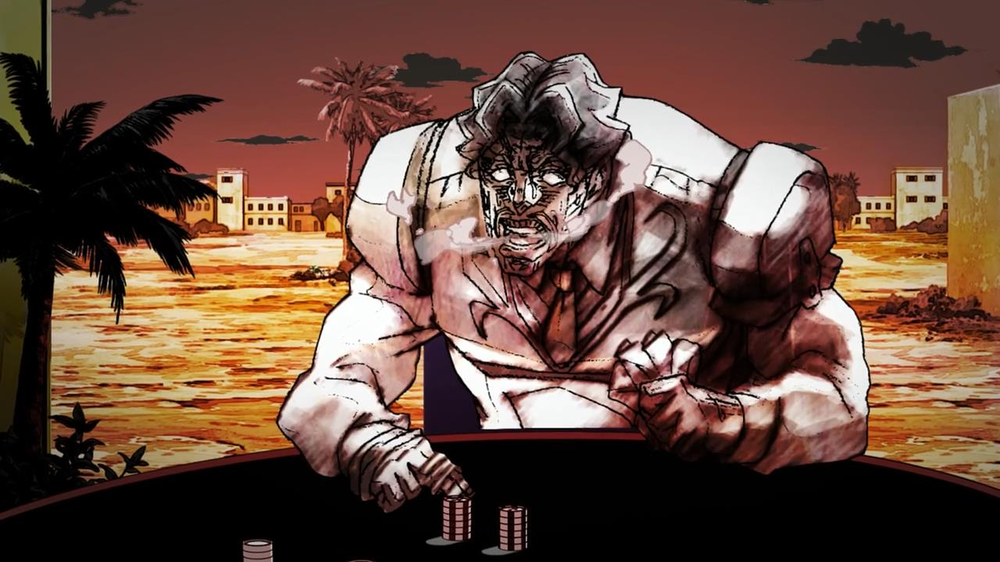

I chose this picture because we have statistics THEN double period biology! Imagine getting jabbed two times in a row in broad day light, that’s what it feels like to have two information-loaded subjects first thing in the morning >:(. It’s okay, I get to see my beautiful, gorgeous, funny friends !
Joseph Joestar’s video compilation represents my emotion on every subject in the schedule! You will literally say “oh my God” every time a new information is presented on the screen. Also i love Joseph Joestar so much!